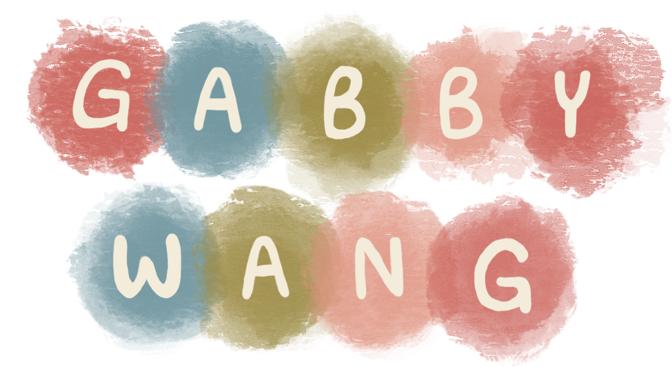
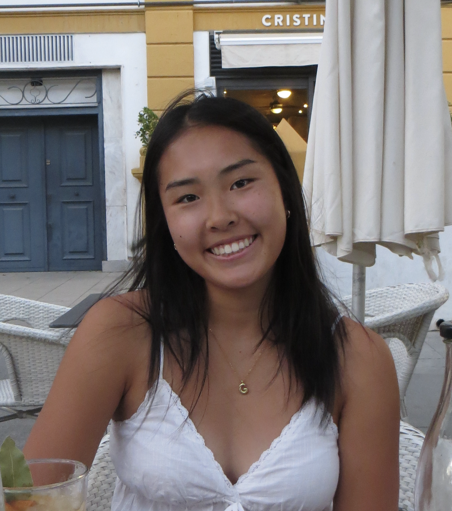

Projects

All Projects


My name is Gabby Wang, and I am a 3rd year Chemical Engineering major and Media Arts and Design minor. I am interested in exploring the intersection of science and design. I have found myself to be easily inspired by the patterns and forms in nature. Ever since I was little, I loved creating things with my hands such as painting, crocheting, and jewelry making. As an artist, I am always looking for new ways to expand my knowledge of design and explore new techniques.